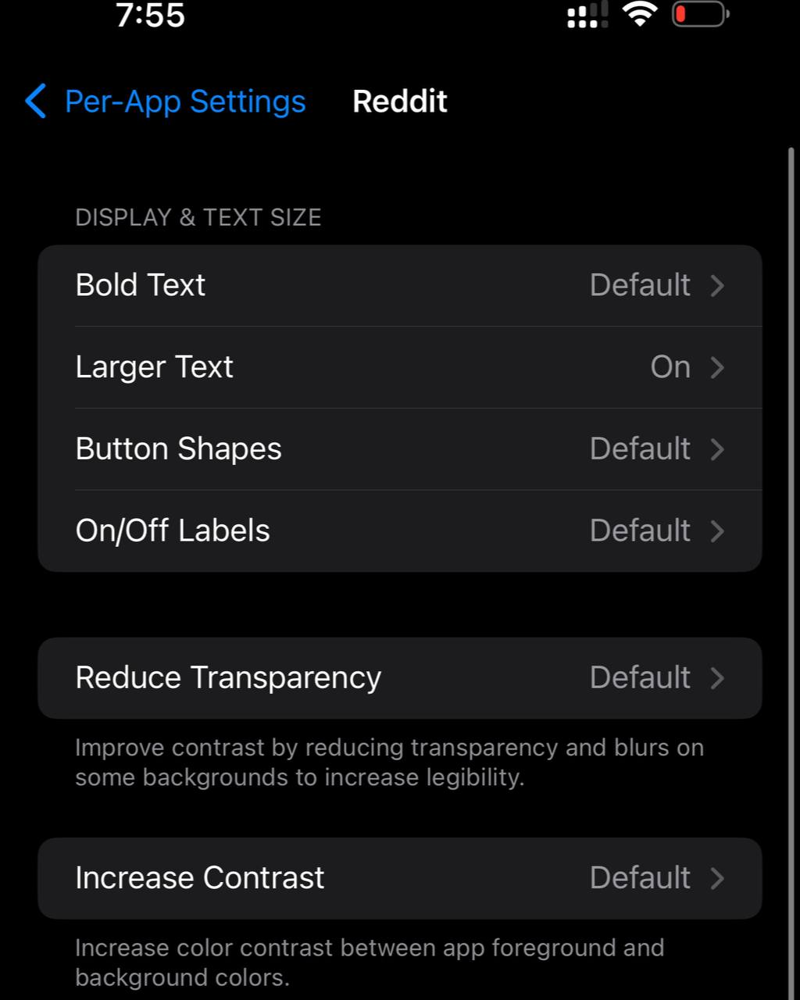
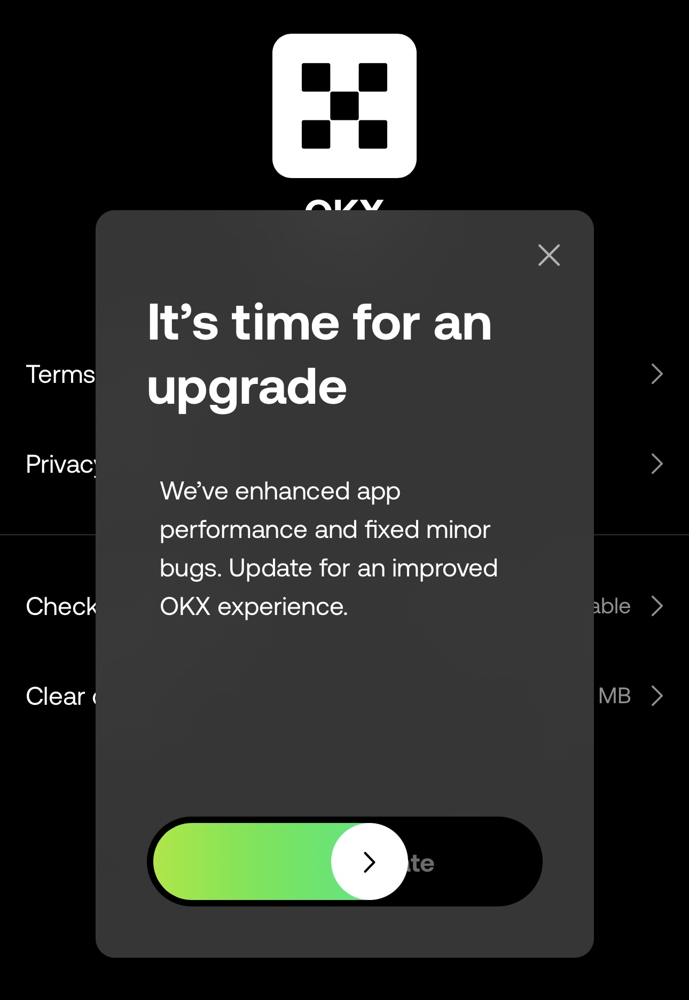

Configuraciones especiales en iOS | Original, traducido por IA
Configuración por Aplicación
Mientras uso Reddit con más frecuencia, encontré el tamaño de la fuente demasiado pequeño para una lectura cómoda. La aplicación sugirió ajustar el tamaño de la fuente a través de la Configuración por Aplicación. Después de aumentarlo ligeramente, Reddit se volvió mucho más fácil de usar. A continuación se muestran las capturas de pantalla que muestran los ajustes de configuración:
 Pantalla de Configuración por Aplicación 1
Pantalla de Configuración por Aplicación 1
 Pantalla de Configuración por Aplicación 2
Switch Control y AssistiveTouch
En 2019, comencé a usar mi iPhone de manera más activa, especialmente para ver videos de TikTok. Sin embargo, cuando mi teléfono estaba montado en un soporte perezoso, se volvió difícil alcanzar la pantalla y deslizar entre videos. Para solucionar esto, compré un mando a distancia Bluetooth que funciona con dispositivos iOS y Android.
En 2022, compré otro mando a distancia específicamente para controlar mi iPhone mientras conduzco. Con una mano en el volante, puedo usar la otra mano sin esfuerzo para navegar por las aplicaciones, ajustar la configuración o controlar la reproducción de medios con los botones de subir y bajar del mando.
Este mando a distancia no solo es excelente para gestionar TikTok, sino que también es lo suficientemente versátil para tomar selfies y controlar otras funciones del iPhone, añadiendo comodidad y seguridad a mi experiencia de conducción.
 Fuente: AliExpress
Fuente: AliExpress
TradingView
Los datos del widget de TradingView son más estables que los de otras aplicaciones, como Tiger Trade.
 Fuente: tradingview.com
Fuente: tradingview.com
Deslizar para Actualizar
El método de actualización utilizado por OKX es fascinante. Los usuarios necesitan deslizar para iniciar una actualización.
 Fuente: tradingview.com